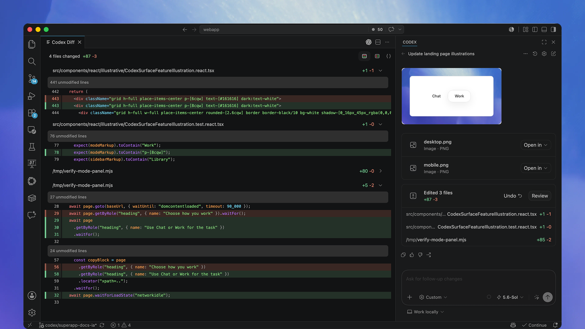

Codex IDE extension
Build with the context already in your editor
Work with Codex beside your code. Bring open files and selections into the prompt, review edits in place, and hand off longer work without breaking your flow.
import { wait } from './backoff'; export async function retryOperation<T>( fn: () => Promise<T>, retries = 3,): Promise<T> { let attempt = 0; let lastError: unknown; while (attempt <= retries) { try { return await fn(); } catch (error) { lastError = error; if (attempt >= retries) break; await wait(200 * 2 ** attempt); attempt++; } } throw lastError;}import { retryOperation } from './retry'; describe('retryOperation', () => { it('stops after max retries', async () => { const operation = vi.fn().mockRejectedValue('nope'); await expect(retryOperation(operation, 2)) .rejects.toBe('nope'); expect(operation).toHaveBeenCalledTimes(3); });});import { setTimeout as wait } from 'timers/promises'; export function nextDelay(baseDelay: number, attempt: number) { const jitter = Math.random() * 0.2 + 0.9; return baseDelay * 2 ** attempt * jitter;} export { wait };Trace and fix a flaky retry bug. Retry loop now stops at max retries before waiting. Changes applied.
Use the context already open
Reference open files, selected code, and recent chats directly from the composer. Codex starts with the code you are already looking at, so you spend less time restating the problem.
Review changes beside your code
Read the summary, inspect a focused diff, and follow up in the same chat. Keep only the changes you want while the source and rationale stay visible together.
Delegate when the task grows
Keep quick iterations local, or connect Codex web when a task needs more time and room. Return to a reviewable result from the same editor workflow.
Quickstart
Get started in your IDE
Install or enable Codex, sign in, and start a chat with the context already open in your editor.
-
Install or enable Codex
Choose your IDE. VS Code and compatible editors use the Codex extension; Xcode and JetBrains IDEs provide their own integrations.
-
Open Codex
VS Code, Cursor, or Windsurf: choose the Codex icon. If it is not visible, open the Command Palette and run Codex: Open Codex Sidebar.
Xcode: open the coding assistant, start a new chat, and choose Codex as the agent.
JetBrains IDEs: open AI Chat and select Codex.
-
Start your first chat
Open a project and ask Codex to explain the codebase, make a focused change, or help you debug an issue. Create Git checkpoints before and after a task so you can revert changes.
Read the best practices
See what Codex can do in your IDE
Stay close to the code while Codex explains, edits, reviews, and delegates.
Use the context already open
Add an open file, a selection, or a recent chat to the composer, then ask Codex to explain or edit the code with that context already attached.
Learn moreReview changes beside your code
Review a concise summary and the changed lines without an extra navigation pane. Inspect the two affected files, keep the edits you want, and ask for a follow-up from the same view.
Learn more
Delegate when the task gets bigger
Choose local work for fast, hands-on iteration, or connect Codex web to delegate a longer task. The chat stays available when you return to review the result.
Learn moreUse Codex IDE extension when…
You are making focused edits
Keep the relevant files and Codex in the same view.
You are learning unfamiliar code
Ask about the files and symbols already open in the editor.
You want to review changes in place
Inspect and apply edits alongside the source.
You want to delegate a larger task
Start cloud work from the IDE and return to the result.